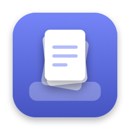

Datenschutz
Stand: 25. Oktober 2026
Kurz gesagt
DropPad erfasst keine Daten über dich. Die App hat keinen Internetzugang, nutzt keine Analyse- oder Werbedienste und überträgt nichts an mich oder Dritte.
Was auf deinem Mac bleibt
Boxen, Verlauf, Einstellungen sowie kopierte Bilder und Texte speichert DropPad ausschließlich lokal auf deinem Mac, im eigenen App-Ordner. Von Dateien, die du in eine Box legst, merkt sich DropPad nur den Speicherort.
Berechtigungen
Eingabeüberwachung nutzt DropPad nur, um zu erkennen, ob gerade Cmd+V gedrückt wird. Tastatureingaben werden nicht aufgezeichnet, gespeichert oder übertragen.
Zugriff auf den Benutzerordner nutzt DropPad nur, um neue Screenshots zu öffnen und in die Zwischenablage zu legen.
Käufe
Testphase und Kauf laufen vollständig über den App Store von Apple. Dabei gilt die Datenschutzrichtlinie von Apple. Ich erhalte keine Zahlungs- oder Kontodaten.
Kontakt
Jonathan Zawadke · jzawadke+droppad@gmail.com
Privacy in short
DropPad does not collect any data about you. The app has no internet access, uses no analytics or advertising services and sends nothing to me or third parties.
What stays on your Mac
Boxes, history, settings and copied images and text are stored only locally on your Mac, in DropPad's own app folder. For files you put into a box, DropPad only remembers where they are.
Permissions
Input Monitoring is used only to notice whether Cmd+V is being pressed. Keystrokes are never recorded, stored or sent anywhere.
Access to your home folder is used only to open new screenshots and put them on the clipboard.
Purchases
The trial and the purchase are handled entirely by Apple's App Store, under Apple's privacy policy. I receive no payment or account data.
Contact
Jonathan Zawadke · jzawadke+droppad@gmail.com